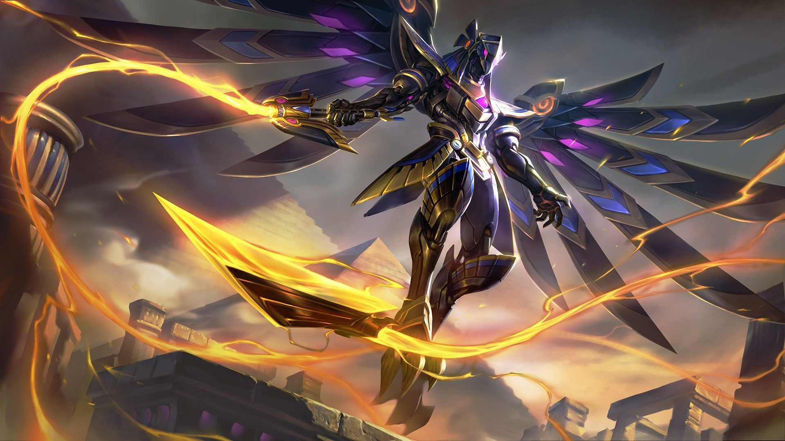
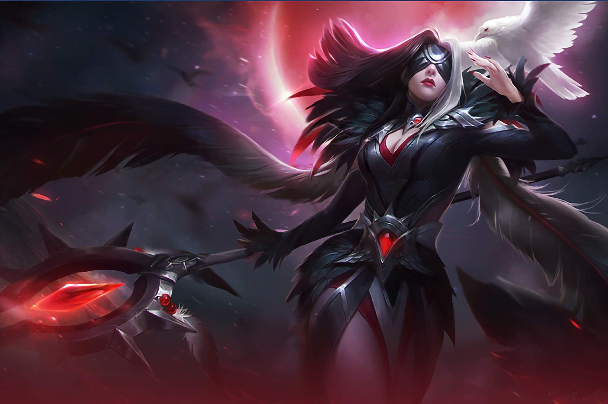
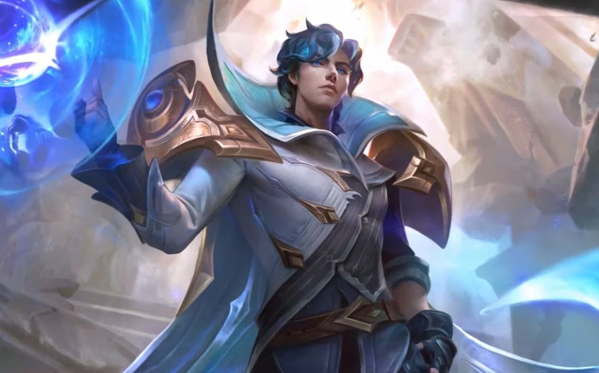
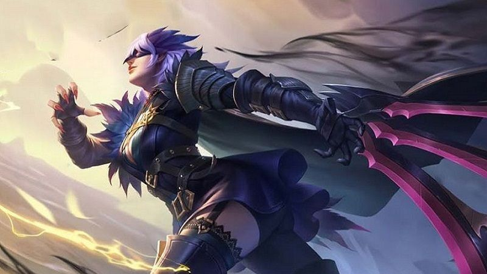
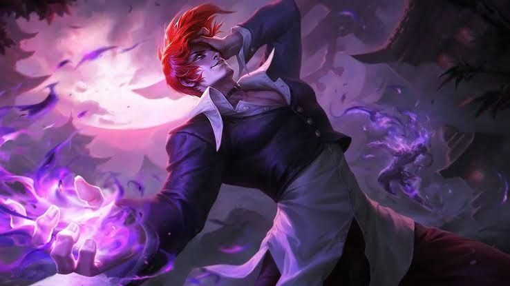

Counter Wanwan
Wanwan merupakan hero yang memiliki mobilitas yang tinggi. Skill 2 Wanwan mampu menghilangkan efek CC yang mengenai dirinya. Hal tersebut membuat Wanwan tidak mudah tertangkap oleh musuh dan membuat Wanwan menjadi Hero yang cukup merepotkan. Namun ada beberapa Hero yang dapat mengimbangi bahkan meng-counter hero ini.
Berikut adalah beberapa hero yang dapat meng-counter Wanwan.
1. Kaja
Gambar Hero Kaja

Kaja merupakan salah satu hero yang dapat menghentikan hero-hero lincah. Kaja juga salah satu hero yang dapat digunakan jika dalam tim musuh terdapat hero Wanwan. Hero Kaja memiliki Skill Ultimate yang bersifat suppressed sehingga Wanwan tidak dapat menggunakan skill 2 nya.
Meskipun Kaja lebih dominan menjadi Support, akan tetapi Kaja dapat merepotkan Wanwan jika terkena Ultimate Kaja.
2. Pharsa
Gambar Hero Pharsa

Pharsa merupakan salah satu hero mage yang memiliki damage burst yang tinggi. Skill Ultimate Pharsa mempunyai area yang cukup luas, sehingga Wanwan akan sulit mendekati hero ini. Jika Wanwan pergi mendekat kearah Pharsa, Pharsa dapat dengan mudah memberikan damage yang cukup tinggi dengan Ultimate-nya sebelum Wanwan mendekat. Skill 4 Pharsa juga memiliki mobilitas yang tinggi, sehingga jika dikejar Wanwan sekalipun, Pharsha dapat melarikan diri dengan mudah.
3. Xavier
Gambar Hero Xavier

Hampir sama seperti Pharsa, Xavier juga merupakan salah satu hero mage yang memiliki damage burst yang cukup tinggi. Skill Ultimate Xavier mempunyai jangkauan yang jauh, sehingga Xavier dapat mencicil Wanwan dengan mudah. Xavier juga merupakan hero yang dapat Solo Kill Wanwan dengan combo Skill-nya.Jika Xavier hanya fokus mengarahkan Ultimate kepada Wanwan, Wanwan akan sekarat dan tidak mampu mengikuti teamfight dan mengharuskan Wanwan untuk kembali ke base untuk mengisi kembali HP yang hilang.
4. Natalia
Gambar Hero Natalia

Natalia mempunyai pasif yang unik yaitu jika Natalia berada dalam semak dalam beberapa detik tanpa menerima damage, Natalia akan memasuki mode conceal. Pasif Natalia akan meningkatkan Movement Speed dan Basic Attack berikutnya. Dengan begitu, Natalia akan dengan mudah mendekati Wanwan dan bahkan dapat membunuhnya. Natalia juga memiliki Skill 2 yang dapat imune terhadap basic attack. Sehingga Wanwan akan susah mengaktifkan Ultimate-nya.
5. Chou
Gambar Hero Chou

Chou merupakan hero fighter yang memiliki damage yang tinggi jika menggunakan item yang tepat. Chou juga memiliki pasif yang mana dapat meningkatkan damage Basic Attack sebesar 180% setelah berjalan beberapa langkah serta memberikan slow effect dalam waktu yang singkat. Chou dapat menghentikan pergerakan Wanwan dalam hitungan detik dengan Ultimate-nya.